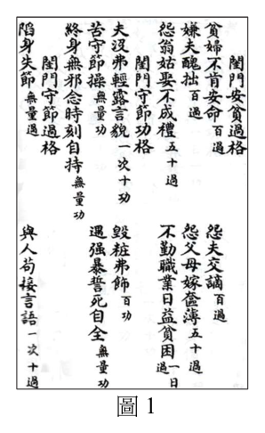
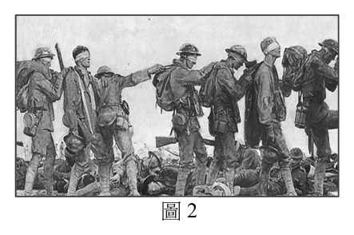
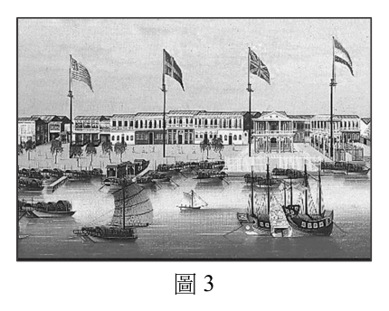

開卷有益 ／
分科測驗 ／ 歷史 ／ 111 年111 年分科測驗歷史試題與答案
這一頁是民國 111 年分科測驗歷史的整份歷屆試題，共 45 題，題目與標準答案出自大考中心 分科測驗歷年試題（依著作權法 §9，考試試題不受著作權保護），其中 45 題附有詳解。以下逐題列出題幹、選項與答案；要計時作答或記錄成績，請用線上練習。
大學入學考試中心原始場次代碼：分科歷史
線上作答這一科 →
全部 45 題
第 1 題
學界對清領臺灣前期的作為,有「消極政府,積極人民」的評論,意指:清廷雖限制內地
人民前往臺灣,但人民仍然一波波渡臺,在土地開發、農業耕作或通商貿易方面,都有不
錯的發展。下列哪一項可作為清領前期「積極人民」的證據?
（A） 設置土牛溝（B） 興築八堡圳（C） 成立撫墾局（D） 派班兵駐防答案：（B）
詳解與考點 正解：題幹所稱「積極人民」要找的是民間主動投入土地開發與農業生產的事例。八堡圳是為農田灌溉而興築的水利工程，能直接顯示民間移墾社會擴張耕地、改善灌溉的行動，故選 B。
A：土牛溝是清廷用來劃定界線、限制越界開墾的措施，反映的是官方管制，而非人民自行開發土地的成果。
C：撫墾局是政府處理開山撫番與邊區治理的機構，且屬清領後期的政策背景，不能作為前期民間農業開發的證據。
D：派班兵駐防是官方的軍事防衛與治安安排，與題幹要找的民間耕作、開墾或通商行動不同。
本題考點：清領臺灣前期——材料若問「積極人民」，優先找民間移墾、灌溉、耕作與商業活動的證據；水利開發（irrigation development）——灌圳能把土地與農業產出連結，是判讀農墾社會發展的具體線索；官民角色——先分辨選項是在描述政府設防管制，還是人民的經濟活動。
第 2 題
歷史家考察某一經濟作物的傳播史,認為富有全球史意義。它最初可能是從印度、波斯傳
到埃及;中世紀時,穆斯林將其引入地中海地區和伊比利半島;十六世紀起,西班牙與葡
萄牙在中、南美洲殖民地,利用非洲奴工大量種植,再將產品運回歐洲。這種作物應是:
（A） 胡椒（B） 煙草（C） 棉花（D） 甘蔗答案：（D）
詳解與考點 正解：傳播路徑從印度、波斯到埃及，再由穆斯林帶入地中海與伊比利半島，最後在美洲殖民地以非洲奴工大量種植並輸往歐洲，完整對應甘蔗與近代糖業的全球擴張。材料的關鍵是伊比利殖民地、種植園和奴役勞動三者相連，故選 D。
A：胡椒主要是亞洲香料貿易商品，並不符合由印度、波斯經埃及與伊比利後，再在美洲大規模建立奴工種植園的路徑。
B：煙草原產於美洲，傳播方向應由美洲擴散至舊世界，與材料從印度、波斯西傳的起點相反。
C：棉花也有跨區傳播與商品化，但材料所述的伊比利殖民地糖業、奴工與歐洲消費市場，是甘蔗更具辨識力的歷史組合。
本題考點：甘蔗與種植園經濟（sugar plantation economy）——看到伊比利殖民、美洲種植園、非洲奴工與歐洲市場連成一線時，判為糖業；全球史（global history）——辨識作物時要比對完整傳播鏈，而非只抓一個產地或單一貿易地區。
第 3 題
一位學者回憶:他考上北平一所私立大學,9月開學,但10月10日便被政府接管,改成公
立大學,課程也調整了。他先前修過哲學,對馬克思主義、黨史、革命史等新課程,並不
覺困難。這最可能是發生於何時的情況?
（A） 五四運動時期,左翼思潮流行（B） 聯俄容共期間,接納共產主義（C） 中共建政以後,管控高等教育（D） 文化大革命時,向工農兵學習答案：（C）
詳解與考點 正解：北平私立大學在短期內被政府接管為公立，課程改為馬克思主義、黨史與革命史，顯示新政權把高等教育納入意識形態與國家管理。這最符合中共建政後對大學的接管與課程重整，故選 C。
A：五四運動時期雖有新思潮與左翼思想流傳，但沒有新政權在北平普遍接管私校並以黨史、革命史重編課程的條件。
B：聯俄容共是國民黨與共產黨合作的政治策略，不能對應政府將北平私立大學改為公立並全面調整課程的情況。
D：文化大革命強調向工農兵學習，且大學教育曾受嚴重衝擊；題幹所述的接管與制度化新課程，更接近建政初期。
本題考點：中共建政與教育（education under the PRC）——看到私校接管、公立化與馬克思主義課程重整並列時，判為建政後的高等教育管控；政治變遷與校園制度（politics of education）——辨識時要同時看政權更替、學校所有權與課程內容三項線索。
第 4 題
中國傳統社會的禮法與性別規範,頗異於現代。明代出版一種個
人自記善惡功過的簿冊,稱作「功過格」。圖1是一種功過格,內
容是利用宗教的因果報應觀念,指導女性道德實踐,積累功德,
以改造命運。如:「嫌夫醜拙」,記百過;「不勤職業」,一日記一
過。從圖1文中規範條目判斷,這位作者最重視的婦女規範是:

（A） 貞節（B） 順從（C） 勤勞（D） 端莊
圖1答案：（A）
詳解與考點 正解：題幹所舉的功過格不是單純勸人勤勞，而是以因果報應把女性行為納入傳統婦德的整體規訓。選項中（A）貞節最直接界定女性在婚姻與性別秩序中的道德界線；勤勞、順從、端莊雖都可作為婦德要求，卻不是此類規範最具核心性的判準。因此選（A），故選 A。
B：順從著重服從家長或丈夫，與貞節的性與婚姻倫理不同；兩者常並存，但不能因涉及夫婦關係就把核心規範等同於順從。
C：「不勤職業」確實顯示勤勞被列入功過，但它是日常勞作的單一面向，不能取代貞節作為女性名節的核心。
D：端莊偏重儀態與舉止；功過格用因果報應約束女性命運，所處理的倫理範圍更深於外在儀容。
本題考點：功過格（merit-demerit ledger）——判讀勸善材料時，先看它以何種獎懲機制塑造行為，再找出最被優先規範的價值；傳統婦德（traditional female virtue）——要區分貞節、順從、勤勞與端莊各自規範的面向，不能以其中一則日常條目取代整體倫理重心。
第 5 題
1895年,福澤諭吉發表〈臺灣永遠的方針〉:「(臺灣)現在既然歸入我國版圖,便不容許照
舊交付蠻民手中,應自內地大舉移民開發富源,這樣纔符合文明的本意。政府的方針一定,
諒不催促也有多數內地人希望移居。自蠻民手中褫奪開闢以來的野蠻事業,加以文明方式
的新創意,無疑可獲驚人的發展。」根據上文,福澤諭吉主張「內地人」大量移民臺灣,
主要目的應是:
（A） 複製北海道農業移民經驗（B） 解決日本人口膨脹的問題（C） 成為日本帝國南進的基地（D） 透過移民以達到殖產興利答案：（D）
詳解與考點 正解：文本把「大舉移民開發富源」與以「文明方式」重新開闢並列，直接顯示移民被視為殖民經濟開發的工具；重點在取得並利用臺灣資源，而非單純安置人口。因此最符合的是（D）透過移民以達到殖產興利，故選 D。
A：北海道的移民經驗可能是日本殖民政策的背景之一，但材料沒有以複製特定地區經驗作為論證重點，核心仍是開發富源。
B：文中沒有把人口增加或就業壓力列為理由，不能由「多數內地人希望移居」推成解決人口膨脹的目的。
C：日本帝國的南進構想屬較廣的戰略脈絡；材料所說的直接目標是開闢土地與資源，兩者不能混同。
本題考點：殖民經濟開發（colonial economic development）——看到「開發富源」等語句，要判斷移民是否被用來取得土地與資源；殖產興業（colonial industrial promotion）——殖民政府以交通、土地與人口配置擴大經濟利益時，可從其直接政策目的辨識；史料證據判讀（source-based inference）——答案須優先對應材料明說的理由，不以較大的時代背景取代文本線索。
第 6 題
學者考察英格蘭生態史的變化:經過羅馬人、薩克森人、丹麥人與諾曼人數波開發,到十
三世紀下半期,英格蘭野生森林已砍伐殆盡。十四世紀後期和十五世紀時,森林一度又覆
蓋部分英格蘭大地,但十五世紀晚期後,隨著人口復甦,林地再遭到清理,變成村落、農
地或牧地。十四世紀後期,森林重返英格蘭大地,最可能與下列何者有關?
（A） 諾曼人征服,平民遭到殘殺,解除環境的負荷（B） 十字軍東征,人民大量離鄉,紓解環境的負荷（C） 黑死病流行,人口大量死亡,降低環境的負荷（D） 百年戰爭爆發,英人傷亡重,減緩環境的負荷答案：（C）
詳解與考點 正解：題幹把森林重返定位在十四世紀後期，且後來人口復甦又帶來林地清理，前後兩句共同指向人口大幅減少後土地利用下降。黑死病流行造成廣泛人口死亡，耕地與聚落活動縮減，因而使森林得以再度擴張，故選 C。
A：諾曼人征服發生的時間遠早於題幹所指的十四世紀後期，不能解釋該時段的森林變化。
B：十字軍東征的主要時段與影響範圍都不足以說明英格蘭大地在十四世紀後期出現廣泛的土地利用退縮。
D：百年戰爭雖與該時期部分重疊，但它不能像黑死病那樣直接解釋跨地區的大量人口減少與農地荒廢。
本題考點：人口衝擊（demographic shock）——人口驟減會降低耕作與燃料需求，使已開墾土地可能重新自然演替；環境史（environmental history）——解讀土地覆蓋變化時，要連結人口、農業與資源利用；年代對照（chronological correlation）——先將材料的時間點與事件發生時段相互核對，再判斷因果可能性。
第 7 題
經濟史家考察十九世紀歐洲運輸革命與工業革命的關聯,指出:「這種運輸設施」的推展,
使先前未曾開發地區捲入世界經濟活動內,更因其克服運輸量、畜力、季節及移動速度等
限制,工業革命成果得以擴大。因此,此一交通革新「不但是運輸革命的完成,而且也是
工業革命的完成」。這位史家所說的「這種運輸設施」,最可能是指:
（A） 汽車的量產（B） 運河的開通（C） 鐵路的興起（D） 輪船的通航答案：（C）
詳解與考點 正解：引文特別說明克服運輸量、畜力、季節與移動速度的限制，並把內陸未開發地區帶進世界經濟；這是鐵路將蒸汽動力、軌道與大規模陸運結合後的效果。鐵路網不僅提高載運量，也縮短內陸與港口的連結時間，故選 C。
A：汽車量產出現在較晚的交通發展階段，且以個別道路運輸為主，不能對應十九世紀工業革命擴大的關鍵設施。
B：運河可降低水運成本，卻受水路配置與航行條件限制，無法完整符合引文所稱對陸上速度與季節限制的突破。
D：輪船強化海上運輸，但不能單獨解決內陸地區與世界市場之間的大量、快速陸運連結。
本題考點：鐵路革命（railway revolution）——材料同時提到大量貨運、快速移動與內陸連結時，優先判斷鐵路；工業革命（Industrial Revolution）——交通成本與市場範圍擴大會放大工業化的生產與銷售效果；世界經濟（world economy）——偏遠地區被納入市場時，要看是哪種基礎設施實際降低其運輸障礙。
第 8 題
研討會上,學者爭論清朝前期成功統治帝國的原因,有兩類解釋:第一類認為是統治者在
不同地區,包括新疆、西藏、蒙古、關內,因地制宜,採取不同統治策略,形成一多民族
帝國。第二類認為是統治者採取漢化政策,才能以少數民族身分入主中原。我們應如何理
解這兩種歷史解釋?
（A） 第一類解釋的證據:實施八旗制度、西南地區實行改土歸流（B） 第二類解釋的證據:動員學者編纂《四庫全書》、開科取士（C） 第一類學者採取多元主義觀點,解釋較空疏,不具學術意義（D） 第二類學者站在華夏中心主義,立場相對客觀,解釋較可靠答案：（B）
詳解與考點 正解：第二類解釋的核心是清廷吸納漢人政治與文化制度來治理中原。編纂《四庫全書》呈現對漢文典籍與儒家學術的整編，開科取士則以科舉吸納士人進入官僚體系，兩者都能支持（B）所說的漢化取向，故選 B。
A：八旗制度是清廷的軍政與身分體制，改土歸流則是西南治理措施；兩者不足以直接呈現題幹所列各區域採取不同策略的整體證據。
C：多元主義觀點是否成立取決於它能否提出區域治理的具體證據，不能僅因採多元觀點就判為空疏或無學術意義。
D：華夏中心主義本身是一種歷史視角，不會天然比其他視角更客觀；解釋的可靠性應由證據與論證檢驗。
本題考點：漢化（Sinicization）——看到科舉、儒學與漢文典籍等制度文化線索，可判斷其是否支持吸納中原傳統的解釋；多民族帝國（multiethnic empire）——判斷因地制宜時，要比較不同區域的實際治理制度；歷史解釋（historical interpretation）——觀點的價值取決於證據與推論，不能直接依立場高下判定。
第 9 題
經濟史家稱十九世紀英國是史上「第一個工業國家」。下表是1801到1921年，英國就業結構百分比的變化。根據十九世紀英國經濟發展趨勢判斷，甲、乙、丙分別是指：
產業部門（%） 年代 甲 乙 丙 1801 36 35 29 1841 28 24 48 1881 34 14 52 1921 42 9 49
（A） 甲、服務業；乙、農業；丙、工業（B） 甲、農業；乙、工業；丙、服務業（C） 甲、工業；乙、服務業；丙、農業（D） 甲、農業；乙、服務業；丙、工業答案：（A）
詳解與考點 正解：表中乙的就業比重從 1801 年的 35% 持續降至 1921 年的 9%，是工業化下農業就業相對萎縮的走勢；丙由 29% 升至 48%，在 19 世紀中期後維持約一半，對應工業；甲在 19 世紀末後升至 42%，對應服務業。以三條趨勢配對，甲、乙、丙依序為服務業、農業、工業，故選 A。
B：此項把甲視為農業、乙視為工業。甲最終升至 42% 而乙一路降至 9%，分別與農業相對下降、工業比重上升的判斷相反。
C：此項把丙視為農業，但丙在 1801 年至 1841 年由 29% 大增為 48%，其後仍約五成；這不是農業就業在工業化中的相對走勢。
D：甲被列為農業，卻在 1881 年至 1921 年由 34% 升至 42%；乙被列為服務業，卻由 35% 降至 9%。兩者都不符表中的長期變化。
本題考點：就業結構轉型（sectoral employment structure）——判讀產業資料要先比各類別的長期增減，不要只看單一年份；工業化（industrialization）——農業就業比重相對下降而工業比重上升時，可由趨勢辨認工業部門；服務化（tertiarization）——工業社會後服務業比重提高，須與農、工的趨勢一併配對。
第 10 題
下列兩則是荷蘭人記載鄭成功貿易的資料:
資料甲:1655 年3 月9 日《熱蘭遮城日誌》:國姓爺的24 艘船隻,從中國沿岸開去各地
貿易:往巴達維亞7 艘,往(越南)東京2 艘,往暹羅10 艘,往(越南)廣南4
艘,往馬尼拉1 艘。
資料乙:1656 年12 月11 日《巴達維亞城日記》:今年國姓爺的6 艘帆船,從中國到柬埔
寨,收購鹿皮及其他貨物運去日本。
根據這兩則資料,可以得出哪一項推論?
（A） 鄭成功拒絕與荷蘭人進行貿易活動（B） 鄭成功獨占了與日本人的鹿皮貿易（C） 鄭成功與荷蘭合作經營南海的貿易（D） 鄭成功是荷蘭在亞洲貿易的競爭者答案：（D）
詳解與考點 正解：兩則資料都列出鄭成功船隻前往多個港口交易，且有從柬埔寨收購鹿皮再運往日本的航線。這些具體航向與貨物流動顯示他直接參與跨區域海上貿易，與荷蘭東印度公司經營的亞洲貿易網路存在競逐關係，故選 D。
A：資料只是荷蘭人記錄鄭成功的船隊與航線，沒有說他拒絕與荷蘭人進行任何交易；不能把競爭推成完全不往來。
B：一批鹿皮運往日本只能證明鄭成功參與這條貿易，沒有排除其他商人或勢力從事同類交易，不能推論為獨占。
C：船隻自行前往巴達維亞、暹羅、越南與馬尼拉，呈現的是可與荷蘭商路並行的活動；資料沒有提供合作經營或共同分利的證據。
本題考點：史料推論（historical inference）——材料直接呈現的航線與貨物可支持「參與」或「競爭」，不能推到未記載的獨占與合作；海上貿易網絡（maritime trade network）——比較多個港口與貨物流向，可判讀行動者在區域市場中的角色；證據強度——單一交易事例不能推出排他性結論。
第 11 題
藝術史家討論近代工業化過程與藝術的關係,談到一個畫派:這是一種都市風格的繪畫,
畫家透過城市人的眼睛看世界,捕捉城市事物須臾即逝的瞬時性、改變性和機會性。他們
喜愛鮮明的顏色,但常把一片均勻的色彩分解成小點,有如一群無固定形狀的點集合。他
們常以日常生活素材入畫,如:星期天的人群或熙攘的街景。這個畫派應是:
（A） 十九世紀初期新古典主義（B） 十九世紀中期的寫實主義（C） 十九世紀後期的印象主義（D） 二十世紀前期超現實主義答案：（C）
詳解與考點 正解：材料中的「都市風格」、「捕捉瞬時性」、「鮮明顏色」與日常街景，都是印象主義以光線、視覺印象和現代城市生活為題材的線索；把均勻色彩分解成小點，是受印象主義影響的新印象主義技法，但不宜直接當成印象主義的後期階段。整體主判準仍符合印象主義，故選 C。
A：新古典主義重視古典題材、秩序與清晰造型，和材料強調瞬息光色與都市日常生活的取向不同。
B：寫實主義同樣會描寫日常生活，因此看似接近；差別在材料特別強調快速捕捉變動的視覺印象與色彩處理，這更符合印象主義。
D：超現實主義著重夢境、潛意識與非理性聯想，並非以城市街景的當下光色為主要表現目標。
本題考點：印象主義（Impressionism）——看到光線變化、瞬間視覺印象與現代都市日常題材時優先判向印象主義；藝術風格辨識——先抓作品處理方式與觀看觀點，再用題材輔助分類；點彩（Pointillism）——色點並置較應作為新印象主義的技法線索，不宜直接等同於印象主義的後期階段。
第 12 題
以下是兩則伊斯蘭史上翻譯運動的觀察:
資料甲:十世紀時,阿拔斯帝國有規模浩大的翻譯運動,主要是把希臘典籍譯成阿拉伯文。
他們翻譯醫學、天文學、化學、物理學論著,但不譯任何類型的文學和歷史書籍。
資料乙:十六至十八世紀,鄂圖曼帝國也有翻譯運動,以引進西歐學問。他們翻譯地理學
著作,也有軍事論著,但找不到任何哲學著述。
綜合兩則資料,歷史上伊斯蘭世界引進外來知識時,態度常是:
（A） 有選擇性:具有實用價值者（B） 有選擇性:契合宗教教義者（C） 無選擇性:隨譯者興趣而定（D） 無選擇性:依市場喜好決定答案：（A）
詳解與考點 正解：資料甲選譯醫學、天文與自然知識而不譯文學、歷史，資料乙選譯地理與軍事而不見哲學；兩則材料共同指向的是依實際治理、技術或軍事需要選擇外來知識，而不是全面翻譯，故選 A。
B：宗教教義不是兩則資料提出的選擇標準。材料列出的取捨是學科類型與實用用途，不能改寫成教義是否契合。
C：兩個時期都明確排除某些領域，正好證明翻譯不是隨譯者興趣任意進行。
D：資料沒有提到市場需求，反而顯示統治者或知識界對學科有方向性的選擇，因此不能說無選擇性。
本題考點：材料比較（comparative reading）——先找兩段材料都出現的取捨邏輯，再排除只適用單一材料的說法；知識傳播（knowledge transfer）——跨文化翻譯常受技術、行政與軍事需求影響；選擇性接受——看到「譯某些學科、不譯另一些」時，結論應是有明確篩選條件。
第 13 題
日治初期埔里的族群調查提及:同治末年,熟番自己隨意附上姓名,故姓氏並未一定,而
同名者甚多,常產生糾紛。所以某官員定例:生子命名必須加上父親之名,迄今不廢。然
而,其中有學識或從事公職者,對此稍覺不悅,因而不少人又再改成漢名。從這則記載來
看,哪個敘述比較符合平埔族使用漢人姓名一事?
（A） 清朝官員強制平埔族改用漢人名字（B） 平埔族受漢人影響而改用漢人姓名（C） 平埔族有識之士不願改用漢人名字（D） 平埔族接受清朝官員制定命名原則答案：（B）
詳解與考點 正解：材料先說熟番原本可自行附姓名，後來官員規定子女命名須加父名；又說有學識或從事公職者不悅而再改成漢名。這顯示平埔族的命名會在與漢人社會接觸的過程中調整，使用漢人姓名較能解釋為受漢人文化與制度影響，故選 B。
A：官員制定的是命名時加父名的規則，材料沒有說他強制所有人改用特定漢人姓名；「定例」與「強制改漢名」不能畫上等號。
C：材料恰好指出有學識或從事公職者後來改成漢名，與「不願改用漢人名字」相反。
D：部分人對命名規則感到不悅，且又自行改成漢名，說明不能概括為平埔族接受該命名原則。分辨關鍵在官方規則的內容，與改用漢名的社會互動並不相同。
本題考點：平埔族與漢人社會互動——材料出現改名、任職與制度接觸時，從個人選擇與社會影響推論文化變遷；史料語意辨析——要區分「加父名的命名規則」與「採用漢人姓名」兩件不同的事；文化變遷（cultural change）——名稱改變可反映接觸與適應，但不能直接推成完全強制或全體一致。
第 14 題
十八、十九世紀之交,某個東亞城市的書肆裡,既可找到傳統漢醫《傷寒論》、《黃帝內經》
的註疏,也可買到荷蘭人醫學著作《內科選要》的在地譯本。這座東亞城市最可能是:
（A） 朝鮮的漢城（B） 日本的江戶（C） 清國的蘇州（D） 越南的河內答案：（B）
詳解與考點 正解：判準是同一座城市的書肆同時販售漢醫經典與荷蘭醫學著作的在地譯本。日本江戶時期透過荷蘭接觸西方知識，形成以荷蘭文獻為媒介的學習傳統；傳統漢方與荷蘭醫學並存，正符合江戶的知識環境，故選 B。
A：朝鮮也受漢文醫學影響，但材料特別指定荷蘭醫學著作的在地譯本，並非其最具代表性的西方知識引進線索。
C：蘇州可見豐富的漢醫書籍，但由荷蘭著作翻譯而來的醫學書在地流通，不能直接由此推向清國城市。
D：河內長期受漢文化影響，但材料的關鍵不只在漢醫經典，而在荷蘭醫學翻譯與其並置，這更指向日本的蘭學脈絡。
本題考點：蘭學（Rangaku）——看到荷蘭文獻、荷蘭醫學與日本在地譯本時，優先連結江戶時期的西學吸收；知識交流——同時出現既有經典與外來譯本，應判讀為不同知識傳統的並存；關鍵線索比對——城市題要抓最具辨識力的書籍語言與翻譯來源，不只看共同的漢文化背景。
第 15 題
某時期,歐洲出現收集古代抄本熱潮。學者遍訪修道院,尋找湮沒的古書抄本,雇人抄寫,
並進行考訂、校勘,以回復古書原樣。他們摹仿古拉丁文,以之寫作。富商和權貴競相興
建豪華宅第以彰顯個人權勢,也資助學者與藝術家的創作,展現文化品味。這最可能出現
在哪一時期?
（A） 六世紀拜占庭帝國時期（B） 九世紀查理曼帝國時期（C） 十四世紀文藝復興時期（D） 十八世紀啟蒙運動時期答案：（C）
詳解與考點 正解：材料把尋找古代抄本、校勘古書、摹仿古拉丁文，以及富商權貴贊助學術與藝術並列，這正是文藝復興人文主義重視古典文化復興與城市菁英贊助的組合線索，故選 C。
A：拜占庭帝國保存不少古典遺產，但材料所描寫的是西歐城市中學者考訂古書、富商競相贊助文化的風氣，並非其典型脈絡。
B：查理曼時期也有抄寫與教育改革，因此看似接近；差別在材料特別強調回復古典文本原貌、模擬古拉丁文及富商個人贊助，較符合文藝復興的人文主義。
D：啟蒙運動重視理性批判與公共論辯，雖也關心知識，但材料的核心是回到古典抄本與古拉丁文，不是十八世紀的思想運動。
本題考點：文藝復興（Renaissance）——看到古典抄本搜集、文本校勘與古典語文模仿時，優先判向人文主義；人文主義（humanism）——以重讀、校訂古典文本來培養文學與歷史素養，是其重要方法；贊助制度（patronage）——城市富商與權貴資助藝術家、學者，可作為文藝復興文化繁榮的社會線索。
第 16 題
學者指出:兩宋政府雖不是強大的政權,但政府重視官方訊息流通管道的管理,除了嚴格
要求輿情的蒐集、巡訪、分析與檢核外,還敕令各層級政令文書必須依規定的時效傳遞。
兩宋政府這麼做的主要目的是:
（A） 監控在野人士的活動（B） 穩定深入地控制地方（C） 取締翻刻官方的文書（D） 動員民力以對抗外族答案：（B）
詳解與考點 正解：材料同時寫到「蒐集、巡訪、分析與檢核」輿情，以及政令文書須依時效傳遞，顯示中央要掌握地方資訊並使命令有效下達。兩宋即使軍事力量未必強大，仍可藉官僚文書與情報流程降低地方失控的風險，把地方納入持續可監督的行政網絡，故選 B。
A：監控特定在野人士只是情報蒐集可能涉及的一小部分；材料強調的是各地輿情與政令傳遞的整體行政流程，目的較廣。
C：翻刻官方文書涉及出版與禁令管理，題幹沒有提到文書複製或流通禁制，不能由傳遞時效推出。
D：對抗外族需要兵源、軍備或戰時動員的線索；題幹所述是常態性的地方資訊與行政控制，兩者層次不同。
本題考點：宋代文書行政（bureaucratic communication）——看到蒐集地方資訊與限時傳令並列時，判為以行政流程維持統治；中央集權（centralization）——判斷統治力時，不只看軍力，也看中央能否持續掌握地方並下達命令。
第 17 題
史書描述某時期常見的戰爭型態:參與戰鬥者,倚靠的是騎士的武勇與出眾的戰技。他不
會有突然被遠處的槍枝射殺的危險,而支配他的命運的,也不是在遠處發號司令的人。相
反的,他可能遭敵人一下猛擊,就從梯子上滾落,而指揮的將領,可能就在他身旁並肩作
戰。此時期的戰爭型態主要是:
（A） 古希臘時期的步兵之戰（B） 中世紀面對面的肉搏戰（C） 十七世紀火砲攻城之戰（D） 二十世紀毀滅性總體戰答案：（B）
詳解與考點 正解：敘述中的「騎士武勇」、「面對面猛擊」與將領在近旁並肩作戰，說明勝負主要取決於個別武士的近戰能力，而非遠距火力或後方指揮。這正是中世紀封建騎士作戰的典型形態，故選 B。
A：古希臘步兵作戰也有近身交鋒，但核心是重裝步兵方陣的隊形與公民兵協同，不以騎士個人的武勇為主軸。
C：十七世紀攻城戰已廣泛運用火砲與槍械，攻防者可能受遠距火力威脅，與材料特意排除槍枝相反。
D：二十世紀總體戰依賴工業化武器、遠距打擊與後方動員；指揮者和士兵不必在同一近戰現場，與材料不符。
本題考點：中世紀戰爭（medieval warfare）——看到騎士、近身肉搏與將領親臨戰場時，優先判為封建時代的作戰型態；軍事技術與戰法——以是否有遠距火力、是否依賴集團隊形或個人武勇區分不同時代的戰爭。
第 18 題
以下是對臺灣史上某一時期的描述:一、臺灣第一次出現具有規模的漢人社會;二、開始
發展以糖、米為主的農業經濟,外銷海外;三、利用臺灣優越地理位置發展轉口貿易。此
一時期應是:
（A） 荷蘭時期（B） 鄭氏時期（C） 清朝時期（D） 日本時期答案：（A）
詳解與考點 正解：題幹把「第一次出現具有規模的漢人社會」、「糖米外銷」與「轉口貿易」放在同一時期，指向荷蘭東印度公司統治臺灣時建立的殖民貿易體系。當時招募漢人開墾，並利用臺灣位於東亞海上交通網絡的位置輸出糖、米，故選 A。
B：鄭氏時期確實延續農墾與海外貿易，但它已在荷蘭統治之後，不能符合「第一次出現具有規模的漢人社會」的時間判準。
C：清朝時期漢人社會規模更大，但題幹所述的轉口貿易與糖米外銷體系早已形成，不能以後來的擴張取代開端。
D：日本時期發展近代化糖業與米作，但題幹強調的是漢人社會初具規模及早期海上轉口貿易，不是殖民近代化。
本題考點：荷蘭時期臺灣（Dutch Formosa）——看到漢人招墾、糖米外銷與轉口貿易同時出現時，判為十七世紀荷蘭殖民經濟；時序判讀（chronological reasoning）——材料有「第一次」等詞時，要先找制度或現象的起點，不能只找後來也存在的時期。
第 19 題
北宋繪畫具有寫實主義的風格,代表作如「清明上河圖」。藝術史家解釋:北宋畫家細緻
觀察岩石表面的紋路、花鳥造型及河中船隻結構,顯示當時畫家對於視覺世界有敏銳的觀
察與深刻的體會。這位史家主張,北宋畫家對「視覺世界」的敏銳觀察可在當時的思潮中
找到思想根源。此一思想根源為何?
（A） 古文運動,回歸「文以載道」傳統（B） 禪宗傳播,主張「明心見性」觀念（C） 道家流行,宣揚「道法自然」思想（D） 理學興起,提倡「格物致知」精神答案：（D）
詳解與考點 正解：材料不是只說北宋畫風寫實，而是把對岩石、花鳥與船隻結構的細察連到當時思潮。理學所提倡的「格物致知」要求透過探究事物以求其理，最能對應從具體視覺世界細密觀察的態度，故選 D。
A：古文運動關注文章應承載道理與文體革新，重點在文學表述，不能直接解釋畫家如何觀察自然與器物。
B：禪宗強調由內在體悟而見性，與題幹由外在事物的紋理、造型和結構進行觀察的方向不同。
C：道家「道法自然」可形成親近自然的態度，但沒有如格物致知般把探究具體事物作為求知途徑，這是最強誘答的差異。
本題考點：格物致知（investigation of things）——材料若突出對具體事物的細察與求理，可用此概念連結理學思潮；思想與藝術互證（intellectual history）——比較畫風與思潮時，要找兩者共享的認識方法，不只找都談到自然的選項。
第 20 題
以下兩則資料談及羅馬人對於基督徒的看法:
資料甲:西元二世紀,羅馬作家菲利克斯寫道:一批賤民攻擊諸神......,這些人或者是無
知的底層賤民,或者是從來就輕信的婦女。他們蔑視神殿、對神像啐唾沫,譏諷
我們拜神的儀式,不把祭司放在眼裡。
資料乙:西元四世紀皇帝迦萊里説:「我們的責任是依循羅馬古代法律和公共秩序,來
糾正和重建一切。我們尤其希望喚醒那班基督徒......他們拋棄祖宗所創宗教和
典禮,蔑視古代習俗,杜撰荒唐法律和學說。」
這兩則資料共同反映羅馬人敵視基督徒的主要原因是:
（A） 賦予女性自主的教義（B） 背棄傳統宗教的態度（C） 採取神秘奇怪的儀式（D） 敵視下層階級的居心答案：（B）
詳解與考點 正解：資料甲指責基督徒蔑視神殿、神像與祭司，資料乙則批評他們拋棄祖宗宗教、典禮和古代習俗；兩則材料的共同判準都是拒絕羅馬傳統宗教及其公共儀式。羅馬人因而把基督徒視為破壞既有公共秩序者，故選 B。
A：材料雖提到婦女可能信仰基督教，卻沒有把女性自主列為敵視的原因，不能把身分描述當成核心論點。
C：羅馬人可能覺得基督徒信仰陌生，但兩段直接責難的是對傳統神祇與禮俗的背離，不是儀式神秘本身。
D：兩段都沒有顯示基督徒敵視下層階級，資料甲反而把信徒貶為底層賤民，與此選項相反。
本題考點：羅馬公民宗教（Roman civic religion）——資料若把祭祀、祖宗禮俗與公共秩序相連，判斷宗教衝突要先看是否拒絕共同儀式；材料共同點（source comparison）——兩則史料並列時，找兩者重複出現的指責，比抓其中一則的枝節更可靠。
第 21 題
某朝代史家修撰史書,出現這種情況:書中常以文意欠佳的漢字,音譯異族姓名。究其故,
除了這些王朝入主中原時,未盡通曉漢文,而致誤用同音字外,更有史官刻意借不雅文字,
暗中詆毀當朝統治者,例如「蒙古」一詞,刻意音譯成「朦骨、盲骨」。這種情況常見於哪
一種史書?
（A） 宋代修的唐史（B） 元代修的金史（C） 清代修的明史（D） 民國修的清史答案：（B）
詳解與考點 正解：題幹描述的是異族王朝入主中原後修史，史官以音近而意義不雅的漢字書寫異族名，並可能藉此暗示對當朝統治者的態度。元代官修《金史》時，蒙古為當朝統治者，最符合材料所說的政治處境與「蒙古」音譯線索，故選 B。
A：宋代所修唐史的當朝統治者不是蒙古或其他入主中原的異族王朝，無法對應材料所說的音譯與暗諷情境。
C：清代修《明史》雖由非漢族王朝主持，但明朝是前代漢人政權；題幹的重點是音譯用字可影射當朝異族統治者，與此組合不合。
D：民國修清史時清朝已不再是當朝政權，史官沒有以曲折音譯暗示現任異族統治者的同一脈絡。
本題考點：官方修史（official historiography）——判斷修史背景時，要同時比對編纂朝代、被修朝代與當時統治者的關係；音譯與政治語言（transliteration and politics）——異族名的用字除了讀音，也可能承載褒貶意涵，需回到書寫者所處權力環境判讀。
第 22 題
二次世界大戰結束後,美國計畫根除日本再度發動戰爭的能力,也認為日本的生活水準不
應高於被其侵略的國家,因此並未計畫協助日本復興。後來,美國改變政策,不但釋放戰
犯,協助日本重建經濟,還要求日本成立「自衛隊」。美國改變政策的關鍵是:
（A） 中國主張「以德報怨」,應對日寬大（B） 盟軍統帥麥克阿瑟個人同情日本人民（C） 冷戰開始,扶植日本以防堵共黨擴張（D） 越戰發生,發展日本經濟以補給美軍答案：（C）
詳解與考點 正解：題幹先寫美國原本要削弱日本，再寫釋放戰犯、協助經濟重建並要求成立自衛隊；政策從懲罰轉為扶植，關鍵在戰後冷戰格局下需要日本成為東亞反共防線的一環。這是以地緣政治調整佔領政策，故選 C。
A：中國主張寬大對日即使可能影響外交氣氛，也不能解釋美國同時推動日本重建與軍事防衛安排的整體轉向。
B：個人同情無法說明跨越經濟、司法與安全政策的連動，材料所示的是國際戰略層級的改變。
D：越戰發生在美國調整對日政策之後；把後來的戰爭當成先前政策轉向的原因，是時間順序顛倒。
本題考點：冷戰圍堵（containment）——戰後政策若由削弱敵國改為扶植盟友，要判斷是否出於防堵共產勢力的戰略；歷史因果與時序（causation and chronology）——選原因時先檢查事件是否發生在政策轉向之前。
第 23 題
王莽建立政權後,為示民寬政,隨即頒布命令,將土地收歸國有,並按一夫百畝、八家為
井的古制重新分配,稱為「王田」。家中男子不足八口卻占田土一井者,須將多餘土地分
給族眾或鄰里。這些作法的主要目的是:
（A） 抑制貧富懸殊（B） 獎勵農業生產（C） 爭取奴婢人權（D） 追求稅賦公平答案：（A）
詳解與考點 正解：王莽把土地收歸國有，並依一夫百畝、八家一井的原則重新分配，還要求占地過多者分給族眾或鄰里。這些措施直接針對土地集中與貧者無地的問題，意在壓低貧富差距，故選 A。
B：重新分地可能影響耕作條件，但題幹著重的是限制多占土地與分配餘田，不是以技術或獎勵提高產量。
C：材料只談土地所有與分配，沒有提供奴婢身分或權利的措施，不能擴張成爭取奴婢人權。
D：稅賦公平可能是土地制度的後續效果，但本題直接呈現的手段是重分土地以抑制兼併，目標較接近貧富調節。
本題考點：王田制（Wang Tian system）——看到土地國有、限額與多餘土地重分時，判為抑制土地兼併；土地與社會階層（land distribution）——政策若直接限制大地主占田並補給無地者，優先判斷其在縮小財富差距。
第 24 題
某位法國文人觀察:「近年來,我們又開始喜歡中世紀;我們打心底敬仰當時的宗教熱情。
在啟蒙哲士伏爾泰眼中,這種信仰只是一種粗鄙的迷信。......我們喜愛......游俠的英勇冒
險;在伏爾泰眼中,這不過是......蠻族粗鄙風俗的殘存。」這位文人所處時代最可能是:
（A） 文藝復興時代、人文主義興起（B） 十八世紀中葉、理性主義盛行（C） 十九世紀上半、浪漫主義當道（D） 十九世紀後半、國族主義勃興答案：（C）
詳解與考點 正解：文人刻意與伏爾泰的啟蒙理性立場對照，轉而敬仰中世紀的宗教熱情與騎士冒險，反映對理性主義的反動及對情感、歷史想像的重視。這正是十九世紀上半浪漫主義的文化取向，故選 C。
A：文藝復興的人文主義多以古典文化為典範，並非材料所示重新肯定中世紀宗教與騎士精神的思潮。
B：伏爾泰正是十八世紀啟蒙理性主義的代表；材料把他的觀點作為對照，表示作者不處在相同主流立場。
D：十九世紀後半的國族主義可利用中世紀符號，但材料的重點是對宗教熱情、冒險與情感的審美肯定，更直接對應浪漫主義。
本題考點：浪漫主義（Romanticism）——看到反啟蒙理性、推崇情感、宗教與中世紀想像的組合時，判為浪漫主義；思想對照（intellectual contrast）——材料若明列某思想家的反面立場，先用該對照鎖定作者所屬思潮。
第 25 題
1920年代,一位臺灣女性在喜帖上申明:不用聘金、不用賀禮、不注重一切形式。《臺灣民
報》推崇這是「前所未有的聲明」、「新時代男女結婚的參考」。這位女性的作法反映:
（A） 總督府實施「內地延長主義」,要求婚禮符合日本習俗（B） 一次大戰後,臺灣生活清苦,結婚不用聘金、不收賀禮（C） 受到時代思潮的影響,臺灣女性開始實踐婦女解放主張（D） 戰爭導致人口減少,鼓勵女性結婚生子,增進人口成長答案：（C）
詳解與考點 正解：喜帖主動聲明不用聘金、賀禮與繁文縟節，並被《臺灣民報》稱為新時代男女結婚的參考，重點在婚姻關係與女性自主意識的社會改革。1920 年代的此類實踐反映婦女解放思潮進入臺灣社會，故選 C。
A：內地延長主義是總督府的統治方針，但材料呈現的是民間女性自主提出的婚禮改革，沒有日本政府要求婚俗一致的線索。
B：不收聘金與賀禮可能減少負擔，但報紙稱之為新時代參考，判準在思想與性別關係的改變，不是生活困苦。
D：題幹未提戰爭、人口減少或生育獎勵；不重形式的婚禮主張也不能直接推成國家人口政策。
本題考點：婦女解放（women's emancipation）——材料若強調女性自主改變婚姻慣習，可判為近代性別平權思潮的實踐；日治時期社會運動（social movements under Japanese rule）——報刊以「新時代」肯定民間改革時，要從倡議內容辨別其社會意義。
第 26 題
一次世界大戰期間,一位畫家親臨法國北部戰場,目
睹士兵受傷的慘狀,描繪了當時新科技戰爭的震撼圖
像,如圖2。這是戰爭史上第一次出現這種戰場傷害。
從受傷狀況判斷,士兵應是遭到敵軍何種攻擊?

（A） 飛機轟炸（B） 坦克碾壓（C） 機槍掃射（D） 毒氣施放
圖227-28為題組
1960 年代初,南非黑人領袖曼德拉在法庭上抗辯:「多年來,白人對非洲民族施行暴政、
剝削和壓迫」;「白人享受世界上最高的生活品質,非洲人卻活在貧窮和悲慘中」;「所有體
制內合法表達反對白人優越主義的手段都被法律禁止」,因此「若不採用暴力行動,非洲民
族無法在對抗白人優越主義的奮鬥中得到勝利。」答案：（D）
詳解與考點 正解：題幹以第一次世界大戰的「新科技戰爭」及戰爭史上首次出現的特殊傷害為判準。毒氣能造成大批士兵的眼睛、皮膚與呼吸道傷害，是第一次世界大戰廣泛使用的新型戰場武器，故選 D。
A：飛機轟炸的主要傷害是爆炸衝擊與破片，不能對應題幹所指的這類化學性新型傷害。
B：坦克碾壓屬直接機械性創傷；坦克雖在第一次世界大戰出現，但不會形成毒氣攻擊特有的集體傷害樣態。
C：機槍掃射造成的是彈丸貫穿或失血等傷害，武器機制與化學毒劑不同。
本題考點：毒氣戰（chemical warfare）——第一次世界大戰使化學毒劑成為大規模戰場武器；總體戰（total war）——工業科技把殺傷方式與戰場醫療問題推向新規模；武器與傷害機制（weapon-injury mechanism）——判斷時要把傷害類型連回武器的物理或化學作用。
1960 年代初,南非黑人領袖曼德拉在法庭上抗辯:「多年來,白人對非洲民族施行暴政、 剝削和壓迫」;「白人享受世界上最高的生活品質,非洲人卻活在貧窮和悲慘中」;「所有體 制內合法表達反對白人優越主義的手段都被法律禁止」,因此「若不採用暴力行動,非洲民 族無法在對抗白人優越主義的奮鬥中得到勝利。」
第 27 題
我們應如何理解曼德拉的作為?
（A） 他指控制度性的隔離政策造成對黑人的壓迫（B） 他在效法甘地作法,以不合作運動進行抗爭（C） 他呼籲循法律途徑,推動體制內的改革運動（D） 他積極鼓吹南非的窮人,發動無產階級革命答案：（A）
詳解與考點 正解：曼德拉把白人優越主義造成的貧富差距與壓迫歸因於「所有體制內合法表達反對」都被法律禁止，指出問題不是個別偏見，而是制度性隔離與種族支配。這正是在批判南非的種族隔離政策，故選 A。
B：材料沒有提甘地或不合作運動，反而說合法抗爭已遭禁止，因而主張不得不採取暴力行動，不能說是在效法非暴力抗爭。
C：題幹明言體制內合法反對手段已被法律禁止，這正是否定循法律途徑改革的可行性，與選項相反。
D：曼德拉批判的對象是白人優越主義與對黑人的制度壓迫，判準是種族隔離，不是以階級鬥爭為核心的無產階級革命。
本題考點：種族隔離（apartheid）——看到法律保障白人優越、限制黑人反對與生活條件不平等時，判為制度性種族壓迫；社會運動策略（social movement strategy）——材料若明說合法管道被封閉，要區分它是在描述體制內改革或對既有體制的抵抗。
第 28 題
在1960年代,南非之外,哪個地區也出現性質相似的社會矛盾?
（A） 印度（B） 英國（C） 美國（D） 伊朗答案：（C）
詳解與考點 正解：共同情境描述白人特權、黑人貧困與法律排除反對聲音，核心是國家制度造成的種族不平等。1960 年代美國的種族隔離與民權運動，同樣圍繞黑人遭受制度性差別待遇及爭取平等權利的衝突，性質最相似，故選 C。
A：印度也有社會階層與歧視問題，但本題比較的是以白人統治與法律隔離維繫的種族壓迫，不能只因都有不平等就視為同類。
B：英國在此時期有族群與移民議題，卻不是材料所示由白人少數統治、以全面隔離制度壓迫黑人多數的社會矛盾。
D：伊朗當時的主要政治與社會衝突並非黑人受白人法律隔離的問題，與題組的判準不合。
本題考點：民權運動（civil rights movement）——比較社會矛盾時，要先抽出壓迫的制度、對象與權利訴求，而非只比表面的貧富差距；種族隔離（racial segregation）——若法律或公共制度依種族分配權利與資源，可與南非 apartheid 作類型比較。
圖3 描繪十八世紀末亞洲某港口的景象。該國政府鑑於外商日多,就在海口劃一特區,由 外商依國籍設立貨棧,懸掛國旗標示。圖中,外商由左
至右分別是美國、瑞典、英國與荷蘭。外商每年只能停
留七個月,每月進城次數也有限制,與政府交涉須透過
本地商人中介。
第 29 題
圖中的港口最可能是:

（A） 巴達維亞（B） 馬尼拉（C） 長崎
圖3（D） 廣州答案：（D）
詳解與考點 正解：題幹的「依國籍設立貨棧」「每年只能停留七個月」與「須透過本地商人中介」同時指向清代廣州的一口通商制度。十八世紀末，清廷將歐、美商船貿易集中在廣州，外商居住於商館區，並由行商居中交涉；巴達維亞、馬尼拉與長崎都不具備這套管制組合。因此港口是（D）廣州，故選 D。
A：巴達維亞是荷蘭在東南亞的殖民據點，行政與貿易秩序由荷蘭東印度公司主導，並非清廷以行商居中限制外商的港口。
B：馬尼拉雖是亞洲重要港市，卻屬西班牙殖民統治下的貿易樞紐；題幹所述的貨棧、停留期限與本地商人中介是廣州制度的線索。
C：長崎曾嚴格管理外國貿易，但其對象與場所是日本幕府管制下的荷蘭、華商交易，不是清廷在廣州對多國外商施行的商館制度。
本題考點：廣州十三行制度（Canton System）——看到外商按國籍設商館、限期停留並須經行商交涉，要判為清代廣州對外貿易；史料多線索判讀（historical contextualization）——港口名稱未明說時，應用多個制度細節交叉定位，不以單一「外商」字樣判斷。
第 30 題
該國政府在海口劃定通商特區,並對外商活動設下限制,反映該國對外商前來貿易時,所
持想法為何?
（A） 通商並不是一種互惠,而是施惠於人（B） 外人經商只是幌子,目的是領土擴張（C） 擔心外商挾著船堅砲利,恐顛覆政權（D） 限制貿易地點,目的是防堵白銀外流
二、多選題(占12分)答案：（A）
詳解與考點 正解：關鍵在題幹呈現的不是平等協商的自由貿易，而是由政府指定地點、期限與中介人的高度管制。清廷將外商通商理解為朝廷准許的恩惠，外商須遵守既定秩序，而非兩國互惠的權利關係。因此（A）最能說明其想法，故選 A。
B：把外商一概視為領土擴張者，較接近後來面對西方帝國主義時的警覺；題幹強調的是常態性貿易管理，不是對侵略企圖的直接判定。
C：船堅砲利與政權顛覆的威脅，屬軍事安全的考量；七個月停留、進城次數與行商中介，顯示的是把貿易置於朝貢式秩序內，而非戰備防衛。
D：清朝限制通商的核心不在防堵白銀外流。對外貿易常使白銀流入中國，題幹中的制度重點是控制外商活動與交涉管道。
本題考點：朝貢體制（tributary system）——判斷清代對外觀念時，若通商被設計成由朝廷准許、外人受管束，應辨為施惠式而非互惠式關係；制度與動機的區分（institutional inference）——限制貿易可出於安全、財政或秩序，須以題幹的具體限制判斷。
第 31 題 （多選）
學生在進行專題討論時,閱讀到以下兩則臺灣考古報告:
資料甲:從陶瓷組合觀察,大坌坑遺址出土的十二和十三世紀貿易瓷器組,幾乎與日本九
州南面的奄美大島,以及九州福岡的博多遺址出土者一致。
資料乙:除臺灣北海岸以外,近年來在西海岸也都發現有少量宋元時期的瓷器,例如臺中
清水中社遺址發現浙江越窯青瓷、彰化菜園角遺址發現青瓷、臺南西寮遺址發現
福建窯青瓷。
根據這兩則資料,可以得出下列哪些可能性的推論?
（A） 史前臺灣的人群已經與外界發生了互動的關係（B） 大坌坑文化的人群已經可以自行製作青瓷器具（C） 大坌坑遺址與九州福岡博多遺址應屬同一族群（D） 臺灣是十二、三世紀陶瓷貿易航線的一個據點（E） 宋元時中國東南沿海人群大量移居臺灣西海岸答案：（A）（D）
詳解與考點 正解：共同判準是考古材料能支持「跨海互動與貿易網絡」的推論，但不能直接證明製作技術、族群身分或人口規模。日本遺址與臺灣大坌坑遺址出土的貿易瓷器組合相近，且臺灣多處海岸遺址發現宋元瓷器，故選 AD。
A：不同地區遺址出現可相互比對的貿易瓷器，表示史前臺灣人群並非完全孤立，已與外界發生物資互動。
D：北、西海岸皆發現宋元瓷器，並與日本及中國東南沿海的出土資料可相連，合理推論臺灣位於當時陶瓷海上貿易網絡的節點之一。
B：資料只說發現來自貿易的青瓷或瓷器組合，沒有窯址、製作工具或製坯證據；遺址名稱含「大坌坑」不等於可推得當地自行製作青瓷。
C：器物組合相似可由交換、轉運或共同參與貿易網絡造成，不能直接推出兩地居民屬同一族群。
E：材料明說西海岸發現的是「少量」瓷器，這支持物資流動，不足以推論中國東南沿海人群大量移居臺灣。
本題考點：考古推論（archaeological inference）——器物跨區相似可推貿易與互動，但族群、技術與移民規模需要各自的直接證據；海上貿易網絡（maritime trade network）——多個沿海遺址出現外來商品時，可判斷其參與區域交換，而非必然是生產地。
第 32 題 （多選）
以下是兩則古代法律形成的資料:
資料甲:公元前五世紀中葉,經過平民長期抗爭,羅馬元老院接受公民大會決議,整理羅
馬法律,刻在銅板上,公諸社會,是為《十二表法》。《十二表法》以明文規範,
保護公民的私有財產和相關權利,也限制貴族的若干權力。
資料乙:公元前六世紀後半,鄭國小國寡民,在齊、秦、晉、楚等大國夾縫中求生存。官
員子產為保護平民,以維繫國家勞動力,決定將法令形諸文字,鑄於鼎上,公布
於民,以保障其權益。
比較上述兩則資料,選出正確選項:
（A） 兩者的共同特色,乃是法律的成文化與透明化（B） 兩者皆是因為平民的抗爭,而導致法律的改革（C） 鄭國子產的改革,目的是為了實踐正義的理想（D） 羅馬的法律改革,是平民爭取平等的重要成就（E） 羅馬與鄭國貴族都在法律改革後喪失政治實力答案：（A）（D）
詳解與考點 正解：共同判準是兩則資料都明載把法令寫成文字並公開，使規範可被民眾知悉；但各自改革的動因與政治效果不可混為一談。羅馬《十二表法》又明言出自平民長期抗爭並限制部分貴族權力，故選 AD。
A：羅馬把法律刻在銅板公諸社會，鄭國把法令鑄在鼎上公布於民，兩者都具有法律成文化與透明化的特色。
D：資料甲直接指出平民長期抗爭促成《十二表法》，並以明文保障財產相關權利、限制若干貴族權力，因此是平民爭取較平等法律地位的重要成就。
B：平民抗爭是羅馬改革的直接原因；鄭國子產的資料則強調在強鄰夾縫中維繫勞動力與保護平民，成因不同。
C：子產的作法可有保護平民的效果，但材料所示首要考量是國家生存與勞動力維繫，不能逕稱為抽象正義理想的實踐。
E：資料只說羅馬貴族的若干權力受限制，沒有說其喪失政治實力，也沒有提供鄭國貴族在改革後失勢的證據。
本題考點：成文法（codified law）——看到法律刻寫、鑄刻並公布時，判斷其共同特徵為成文化與公開化；史料比較（comparative source analysis）——共有制度形式不代表改革原因相同，須分別核對每則材料的動機與結果。
第 33 題 （多選）
1610年代,印度蒙兀兒王室所屬商船「拉希米號」,在印度洋兩度遭歐洲人劫持:
事件一:1612 年4 月,英格蘭東印度公司船隊劫持「拉希米號」,勒索4000 英鎊贖金。
蒙兀兒皇帝對東印度公司進行制裁,責令英格蘭人歸還,否則禁止其在境內蘇拉
特經商。東印度公司衡量利弊,不久即屈從皇帝的要求。
事件二:1613 年,「拉希米號」商船又被葡萄牙人劫持,蒙兀兒皇帝大怒,派兵攻打葡萄
牙在蒙兀兒帝國境內的商業據點。葡萄牙人審度得失,決定交還「拉希米號」。
我們應如何詮釋蒙兀兒帝國的處置與歐洲人的反應?
（A） 蒙兀兒帝國排斥商業,欲藉拉希米號事件切斷歐洲商務（B） 歐洲人到亞洲的目的是貿易,寧作妥協以確保商業利益（C） 蒙兀兒帝國擁有軍事科技之優勢,歐洲人無法與之抗衡（D） 歐洲人擁船堅砲利,但無法彌補人數劣勢,而尋求妥協（E） 蒙兀兒帝國善用自身優勢,利用歐洲人的弱點加以對付答案：（B）（D）（E）
詳解與考點 正解：共同判準是蒙兀兒皇帝以禁止經商或攻擊商業據點施加成本，而英格蘭、葡萄牙都衡量利弊後交還商船。這顯示歐洲商人重視在印度洋的貿易利益，海上武力也不足以取代在帝國境內經商所需的政治允許，故選 BDE。
B：兩次事件中歐洲人最終都作出妥協，正是為保有在蒙兀兒境內的商業利益，而非為一次劫船行動與龐大市場決裂。
D：歐洲船隊能在海上劫持商船，但蒙兀兒帝國可在陸上制裁蘇拉特貿易或進攻據點；海上優勢無法彌補在其領土內的人力與權力劣勢，因而須妥協。
E：皇帝沒有一概切斷貿易，而是針對歐洲人依賴的經商權與據點採取制裁，善用自身的領土與行政優勢迫使對方讓步。
A：處置目的是要求歸還商船並維護主權，制裁本身還以是否准許繼續經商作為槓桿，不能解讀為排斥一切歐洲商務。
C：材料沒有比較雙方軍事科技高下；歐洲人讓步可由市場准入與帝國制裁的成本解釋，不能額外推出蒙兀兒軍事科技更優。
本題考點：近代早期亞洲貿易（early modern Asian trade）——歐洲商人進入亞洲市場時，要同時看其海上能力與對在地政權許可的依賴；權力不對稱（asymmetrical power）——單一武器或船隊優勢不足以決定結果，須比較誰能控制市場、據點與領土內的成本。
第 35 題
從上述綱要看,伊能嘉矩主要採用哪種編纂策略來書寫歷史教科書?
（A） 人物敘事（B） 時序排列（C） 政經專題（D） 全球視角答案：（B）
詳解與考點 正解：判別歷史教科書的編纂策略時，若綱要以年代、朝代或前後事件依序排列，主線就是時序排列，而非以單一人物、主題或全球互動作骨架，故選 B。
A：人物敘事以特定人物的生平、抉擇或功業串連內容；僅有歷史事件的先後安排，不能據此判為人物敘事。
C：政經專題會把政治制度、經濟變遷等議題橫跨不同時期集中討論，與依年代展開的編排原則不同。
D：全球視角須明確把臺灣或地方歷史放入跨區域交流、帝國或世界體系中比較；時間順序本身不構成全球視角。
本題考點：歷史敘事結構（historical narrative structure）——判斷編纂策略時，先看章節是按時間、人物、主題還是跨區域關聯排列；時序排列（chronological organization）——內容以事件先後為主軸時，判為時序排列。
第 36 題
荷蘭占領臺灣期間,曾有日本商人濱田彌兵衛因不願向荷蘭繳納關稅,而爆發衝突。請依
據上述資料,說明日本商人何以不願向荷蘭繳稅?(2分)
標準答案未收錄
詳解與考點 正解：濱田彌兵衛不願納稅的關鍵，在於他不承認荷蘭人在臺灣對日本商人擁有可課稅的統治權。日本商人以幕府授與的海外貿易身分自居，將與荷蘭的關係視為平等往來，而非荷蘭殖民統治下的臣民；因此荷蘭要求關稅被理解為對日本商人地位與貿易權的否定。故可作答為：日本商人不承認荷蘭對其有徵稅管轄權，主張兩方應以平等關係通商。
本題考點：殖民主權（colonial sovereignty）——判斷稅務衝突時，先看當事人是否承認徵稅者的統治與管轄權；東亞海上貿易（East Asian maritime trade）——商人身分常同時牽涉國家授權、港口管理與主權競爭，不能只看成一般商業糾紛。
第 37 題
伊能嘉矩所擬的教科書綱要,對清朝治臺顯然抱持負面評價。請從上述綱要找出兩則條目
為證據,並舉歷史事例來說明。(4分)
二、唐代詩人對一些赴華居留的外國宗教人物的遭遇多所注意:
資料甲:項斯寫來自日本與朝鮮的學者,因病痛而追憶過往:「雲水絕歸路,來時風送船。
不言身後事,猶坐病中禪。」
資料乙:劉言史寫一位人物早年到漢土,如今年衰體病,思念故鄉的心境:「竺國鄉程算
不回,病中衣錫(杖)遍浮埃。如今漢地諸經本,自過流沙遠背來。」
資料丙:鄭巢寫多年前來華人物的思鄉抑鬱心情:「南海何年過,中林一磬微。病逢秋雨
發,心逐暮潮歸。久臥前山寺,猶逢故國衣。」
標準答案未收錄
詳解與考點 正解：可採「綱要條目—史例—負面意義」的作答結構。若條目批評清廷限制渡臺或消極經營，可舉清初渡臺禁令及限制攜眷為例，說明政府將臺灣視為需防範的邊陲而非積極建設的地方；若條目提到民變或治理失序，可舉朱一貴事件或林爽文事件，說明社會矛盾與官府控制力的問題。每組都要把條目的措辭連回史例，才構成對清治負面評價的證據。故可依此寫成兩組完整論證。
本題考點：史料論證（historical argumentation）——申論題要把材料中的判斷詞逐一接到可驗證的史實，不能只羅列事件；清治臺灣（Qing rule in Taiwan）——評價治理時可從移民管制、行政投入與社會動亂三個面向，分辨史家批評的是政策還是結果。
第 38 題
從三首詩內容推測,詩中人物所屬宗教最可能是:
（A） 祅教（B） 景教（C） 道教（D） 佛教答案：（D）
詳解與考點 正解：判斷詩中人物的宗教時，若詩文出現佛、僧、寺、輪迴、因果或修行等語彙，應從佛教的信仰與修行框架理解，而不是只因帶有神祕色彩便歸入其他宗教，故選 D。
A：祅教的辨識線索通常在光明與黑暗的二元對立、火崇拜等；沒有這類專屬線索時，不能以泛稱的宗教意象判定。
B：景教屬基督宗教在中國的傳播，判讀時要找上帝、彌賽亞、十字等相關語彙，不能與佛教修行語言混同。
C：道教常以道、仙、煉養、符籙等概念為辨識重點；宗教人物或山林意象本身不足以直接判為道教。
本題考點：宗教文本辨識（religious textual identification）——判斷宗教歸屬時，要以成組的專屬詞彙與教義線索為準；佛教（Buddhism）——遇到因果、輪迴、僧寺或修行等概念時，優先檢驗是否構成佛教脈絡。
第 39 題
資料甲和資料乙所述之外國宗教人士,其旅居中國的目的為何?(2分)
標準答案未收錄
詳解與考點 正解：判準是宗教人士的旅居目的須從宗教實踐與文本流動判斷，而非只看其國籍。若詩句呈現禪修、經本或來自佛教聖地等線索，最合理的解釋是僧侶為求法而入華，研習佛教義理、取得或譯傳經典，並與中國寺院交流。故可作答為：其目的在求取、研習與傳播佛法及佛經。
本題考點：佛教傳播（Buddhist transmission）——遇到僧侶、禪修與經典線索時，優先從求法、譯經與傳法解釋跨國移動；文本流動（textual circulation）——宗教經典的攜帶、研讀與翻譯可用來辨別宗教旅行與一般商旅或使節。
第 40 題
根據三首詩的描述,當時外國人士入華有哪兩種主要路徑?請就上述資料指出證據。(4分)
三、1791 年法國大革命初期,制憲國民會議制定憲法,其中若干條款涉及「政體」問題:
資料甲:「政府體制是君主制,行政權授予國王,在其麾下由官員行使」;「立法權委予
人民自由選出的代表組成的國民會議」;「司法權委予人民定時選舉的司法官行
使」。
資料乙:「國王的人身神聖、不可侵犯,正式頭銜是法蘭西人民的王」;「在法國,沒有
其他權威高於法律權威,國王之統治由其而來,僅能以法律之名求得服從。」「國
王即位時,須宣誓效忠國家與法律。」
閱讀上述資料,回答下列問題:
標準答案未收錄
詳解與考點 正解：作答可從交通意象分成海、陸兩線。出現船、渡海或日本與朝鮮等線索時，可判為跨海來華的海路；出現流沙、竺國或西域等線索時，可判為經中亞與西域入華的陸路。兩種主要路徑故為海路與西域陸路，並須各援引一則詩句作證。故可依此組織答案。
本題考點：唐代對外交流（Tang international exchange）——辨別外來者路徑時，將海船、島國等意象連到海路，將流沙、西域等意象連到陸路；史料引證（textual evidence）——問「指出證據」時，答案須同時寫出分類結論與材料中的關鍵詞。
第 41 題
根據上述條款,法國大革命初期要建立的政體應是:
（A） 專制君主制,且國王擁有絕對的權力（B） 專制君主制,但國王權力受法律約束（C） 立憲君主制,但國王仍保有實質權力（D） 立憲君主制,且國王只是虛位的元首答案：（C）
詳解與考點 正解：判準在於君主受憲法限制後是否仍保有實質政治權限。立憲君主制並不必然使國王成為純粹禮儀性的元首；只要國王仍能參與行政、任命或否決等決策，即屬（C）所述的型態。這一分類以君主是否具有實權為界，故選 C。
A：專制君主制的定義是君主權力不受憲法或代議機構的有效限制，與立憲政體的基本條件不合。
B：國王受法律約束已否定其權力絕對的專制特徵；政體不能同時以「專制」和受憲法拘束作為核心定義。
D：君主成為虛位元首須以實質決策權已移交民選政府為條件，並非所有立憲君主制的必然結果。
本題考點：立憲君主制（constitutional monarchy）——先判斷君主權力是否受憲法限制，再判斷是否保有實權；君主虛位化（ceremonial monarch）——只有政治決策權實際移交民選政府時才成立；政體分類（regime classification）——不能把「受法律約束」直接等同「完全無權」。
第 42 題
法國制憲國民會議採取這種政體,應是以當時歐洲哪個國家的政體作典範?(2分)
標準答案未收錄
詳解與考點 正解：以國王保有行政權、民選代表掌立法權、司法權另由選舉的司法官行使來看，這是以憲法限制君權並分立權力的君主立憲安排。當時歐洲最常被法國革命者視為典範的是英國政體；國王不是絕對君主，而受法律與代表機關牽制。這是依政體特徵作出的比較，作答時仍應以權力配置作為證據。故可作答為英國。
本題考點：君主立憲制（constitutional monarchy）——國王仍掌部分行政權，但權力受憲法與代表機關限制時，應與絕對君主制區分；比較政治史（comparative political history）——判斷革命時代的制度典範，要由權力如何分配與限制，而非只看是否保留國王。
第 43 題
史家主張,這部憲法的制定明顯受到啟蒙哲士孟德斯鳩學說的影響。請根據上述資料,舉
出證據並加以說明。(2分)
四、1950 年爆發的韓戰,對亞洲影響重大,也牽動歐洲局勢。以下是三則相關敘述:
資料甲:「韓戰爆發後,杜魯門將國防預算提高到500 億美元,......部署在A 組織的軍力
也從14 個師增到50 個。」
資料乙:「西歐領袖們擔憂,韓戰代表蘇聯將在歐洲和亞洲採取更侵略性的政策,乃致力使
A 組織由一個鬆散的防禦性聯盟,轉型為聯合戰鬥力量。但這需付出代價。美國軍
事預算暴增後,就要求西歐盟邦加強自己的軍事力量,並同意西德重整軍備。」
資料丙:「韓戰對西德帶來不曾預期到的反響。許多西德人和西歐人擔心南韓若落入共產
勢力之手,會危及西德的安全,而要求西德重整軍備。雖然不少人基於過往經驗
對此一提議感到擔憂......而加以反對,但冷戰的緊張才是關鍵。西德在1955 年
重整軍備,並加入A 組織。」
請回答以下問題:
標準答案未收錄
詳解與考點 正解：孟德斯鳩的權力分立學說可由立法、行政、司法被分別委託給國民會議、國王及官員、司法官來證明。三種權力不集中於同一人或同一機關，能互相節制，避免專制；國王受法律拘束也與此精神相符。這種對應以權力配置為判準，具體引證仍須逐條連回憲法條文。故可舉權力分立作為證據，並說明其防止權力濫用的作用。
本題考點：權力分立（separation of powers）——材料分別指定立法、行政與司法的行使者時，應連到孟德斯鳩的制衡理論；憲政主義（constitutionalism）——判斷君主是否受限，重點在法律與制度能否約束統治者，而非是否仍保留王位。
第 44 題
三則資料的「A組織」是指:
（A） 聯合國（B） 歐洲聯盟（C） 華沙公約組織（D） 北大西洋公約組織答案：（D）
詳解與考點 正解：集體防衛組織若由北美與西歐國家組成，目的在共同應對蘇聯陣營的安全威脅，便是（D）北大西洋公約組織。北約以跨大西洋軍事合作與成員共同防衛為核心，與其他組織的地域和陣營不同，故選 D。
A：聯合國是全球性的國際組織，職掌涵蓋和平、安全、發展與人道合作，不是以固定軍事同盟成員為核心的組織。
B：歐洲聯盟主要推動歐洲整合、共同市場與政治協調；雖有安全合作，性質仍不同於跨大西洋的軍事同盟。
C：華沙公約組織由蘇聯領導的東歐社會主義國家組成，所屬陣營與北約相對。
本題考點：集體防衛（collective defence）——判斷軍事同盟時看成員是否承諾共同回應對會員的攻擊；冷戰陣營（Cold War blocs）——北約屬西方陣營，華沙公約組織屬蘇聯領導的東方陣營；國際組織類型（types of international organizations）——全球性組織、區域整合組織與軍事同盟的目的不同。
第 45 題
綜合資料甲和乙的陳述,韓戰爆發後,美國在西歐有哪些具體的軍事作為?請舉兩例來說
明。(2分)
標準答案未收錄
詳解與考點 正解：可分成美軍直接增強防衛與促使歐洲盟邦擴軍兩項。第一，美國增加部署在 A 組織的軍力；第二，要求西歐盟邦強化自身軍備，並同意西德重整軍備。這些做法將原本較鬆散的聯盟轉為較具聯合作戰能力的防衛體系。這一歸納以冷戰集體安全的因果鏈為準，具體軍事作為仍須逐項回扣材料。故可列上述兩項作答。
本題考點：冷戰集體安全（collective security in the Cold War）——分析軍事聯盟變化時，要分辨直接增兵與要求盟邦擴軍這兩種作為；韓戰的國際影響（international impact of the Korean War）——亞洲戰爭可改變歐洲的安全判斷，須從同盟部署與再武裝政策連結因果。
第 46 題
資料丙提到不少人因擔憂而反對此提議,請說明其原因。(2分)
標準答案未收錄
詳解與考點 正解：反對西德重整軍備的核心，是第二次世界大戰與納粹軍國主義的記憶仍深，擔心德國再度武裝會復活軍國主義、威脅歐洲和平。冷戰安全焦慮最後改變部分人的立場，但沒有消除上述歷史顧慮。此判斷須以材料提及的過往經驗作為直接證據，才能完成完整論證。故可作答為：人們憂慮再武裝會重演德國軍國主義與戰爭破壞。
本題考點：戰後德國問題（postwar German question）——判斷西德再武裝爭議時，要同時看冷戰安全需求與二戰記憶造成的反對；歷史記憶（historical memory）——相同的軍事政策可因過往經驗而有不同政治接受度，不能只用當下戰略需要解釋。
其他年度
回到分科測驗歷史的年度總覽 ，
或到分科測驗題庫首頁 看其他科目。
題目與標準答案出自大考中心 分科測驗歷年試題（依著作權法 §9，考試試題不受著作權保護）。依中華民國《著作權法》第 9 條第 1 項第 5 款，
依法令舉行之各類考試試題不得為著作權之標的，得自由利用。詳解為 AI 整理的學習輔助，
並非官方標準答案 ；中華民國會修訂，引用前請對照現行版本查證。